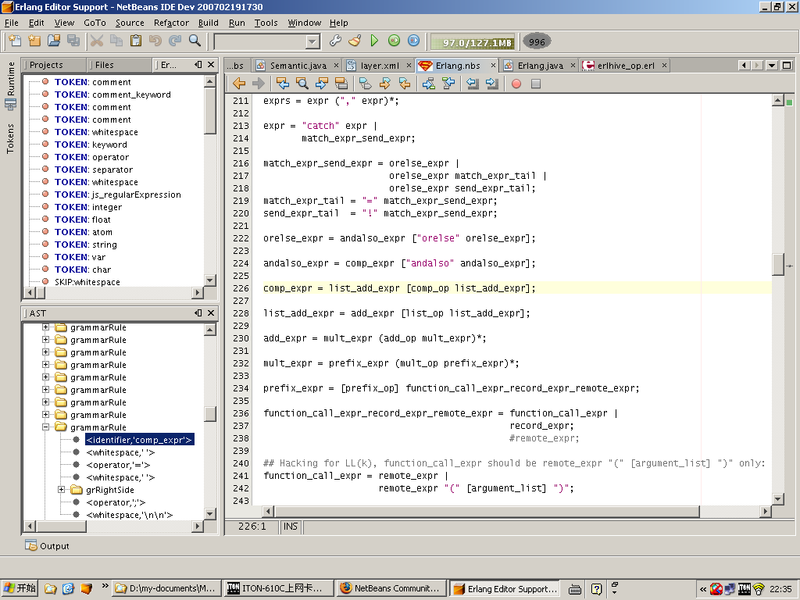
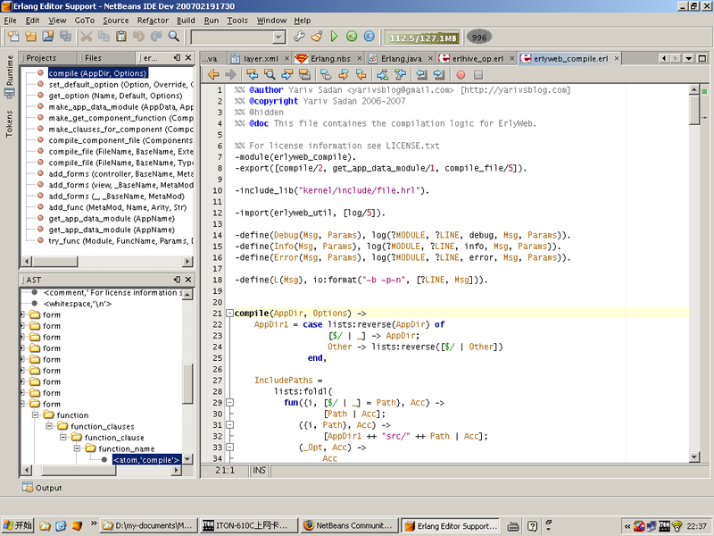

27 March 2007
|
Caoyuan Deng |
| Caoyan's Hot Links: |
Caoyuan Deng is a developer in Canada who is using the brand new Schliemann approach to create language features for Erlang in NetBeans IDE. For the uninintiated, "Schliemann" allows you to declaratively assign NetBeans IDE language features to tokens and grammar, instead of requiring you to implement a long list of NetBeans APIs to create language features, such as code completion, for a file type. (For more information on Schliemann, go here.) And what is "Erlang"? Read the interview below to find out...
I'm a Canadian who was born in China. I'm currently living in beautiful Vancouver B.C, Canada, and travel to China sometimes as an IT consultant. I wrote an open source stock technical and trading platform AIOTrade over the past one and a half years. Currently, I'm helping out with my friend's project, which is based on Ruby on Rails and will be migrated to Erlang soon.
NetBeans IDE is my major development tool. I use it to develop Java, Ruby, JavaScript and now also for my Erlang project. The NetBeans Platform is my preferred framework for standalone Java applications. I always recommend both the IDE and the platform to my friends.
I knew of NetBeans IDE several years ago, but rarely used it until version 4.0. With the 4.0 release, NetBeans became my buddy. I'm used to using the cutting edge NetBeans versions, sometimes I wonder if I'm the one who downloads each NetBeans Q-Build release first, outside Sun! I'm pleased that NetBeans is getting much more powerful along with the version number increasing.
I developed an All-In-One Platform for traders (AIOTrade) based on NetBeans Platform. AIOTrade is an open-source, free stock marketing technical analysis tool with charting and Artificial Intelligent features. And my most recent work on the NetBeans Platform is the Erlang Editor Support Module for NetBeans IDE.
Some background to all of this is that sometime around September 2005, I suddenly found that I would have a fairly long stretch of spare time. I had had a lot of thoughts on stock marketing analysis for years, but hand't had time to try them out. So, I decided to develop a platform which was named Humai Trader in the beginning, and then I changed the name to AIOTrade one year later. At the time when I began my project, there had been some general purpose frameworks for web applications, but rarely any for desktop application development. I did some research on Eclipse RCP and the NetBeans Platform, and chose NetBeans over Eclipse for these reasons:
Back to the development of my project. There were very few documents at that time, so I had to dive into the NetBeans source code to grasp the answers. But that's a good experience, because the more I read the source code, the more I liked it, and the more I learned from it.
The NetBeans Platform is an amazing framework, I quickly got my project to version 1.0 with its help. (My users sometimes are surprised by how quickly I'm able to code, because of the NetBeans Platform.) The UI work is extremely easy with Matisse, I can focus on the algorithm and charting features without wasting too much time on UI and option settings, and the like.
| ANTLR?! JavaCC?! Help! I don't understand...
There are several technical terms that relate to syntax analysis. In parts of this interview, a lot of these terms are bandied about. Basically, existing programming languages have their grammars defined in one of a number of formats. However, these formats cannot be directly used within an IDE. In the technical part of this interview, Caoyuan describes how to change these formats to the format understood by NetBeans IDE, e.g., how to convert the ANTLR format to the NBS format. As a brief introduction to understanding these terms, here they are listed, with a brief sentence or two, and a reference for further reading:
|
Erlang is a general-purpose programming language and runtime environment. Erlang has built-in support for concurrency, distribution, and fault tolerance. Erlang is used in several large telecommunication systems from Ericsson. The most popular implementation of Erlang is available as open source from the Erlang site. From the programming language perspective, Erlang is a Functional Programming language with many dynamic features, such as being dynamically typed, with hot code swapping, etc.
Erlang is currently being talked up as "the next big thing". In my opinion, Erlang is ideal for soft real-time, heavy concurrent load network applications, and Java is well-positioned for the UI side, as well as the heavy computing tasks. I'm going to split AIOTrade into a client/server application. The server-side will act as a streaming quote data feed server and be responsible for delivering transaction orders to brokers in soft real-time, written in Erlang. The client-side charting and UI features will remain in Java, where Java is strong. With the Jinterface APIs provided by Erlang, Java is easily able to talk with the Erlang server.
Today, programmers are increasingly using multiples languages in their projects. For example, they're mixing Java, with Erlang, with Groovy, with JavaScript, and with Ruby, etc. NetBeans stands out in this area, with the Schliemann project and other good stuff, such as the Common Scripting Language Support. And NetBeans engineer Martin Krauskopf has also brought the Debug-commons framework into NetBeans recently. So, NetBeans is becoming a mIDE (Multiple Languages Integrated Development Environment) and programmers will be able to write, debug, and test their projects without needing to switch from one IDE to another. That will bring in extreme levels of productivity to programmers.
In my case, I hope to write/test/debug the Java client and the Erlang server in the same IDE. Not only the Java client of my application, but also the IDE itself can talk with the Erlang Server, and vice versa.
To support a new language with Schliemann, the challenge lies in defining the grammar file, in NetBeans Scripting (NBS) format. In the Erlang case, this means defining an "Erlang.nbs" file. There are a lot of language grammar definitions in the form of yacc, JavaCC and ANTLR, and so on, but these can't be applied directly to the NBS format. And, currently, Schliemann supports only the LL(1) format directly, although a bug has recently been fixed that should let Schliemann support LL(4) as well.
However, these language grammar definitions in the form of yacc, JavaCC and ANTLR are good starting points for the NBS format. To transform them (usually in LR or LALR) to LL(1), you need to clean them up to reflect the NBS format. First, replace ' with " in the grammar definition. Then remove all the stuff that is not used in the NBS format, such as coding blocks. Anyway, just make it look like a NBS file. There are a lot (more than about 20 currently) of already defined NBS files in the NetBeans sources, within the scripting module and languages module, which you can use as a reference. You can browse the scripting module on-line here and the languages modules here.
Then you should follow at least the following three steps:
add_expr -> add_expr add_op mult_expr; add_expr -> mult_expr;
The NBS form is Extended BNF, so, you can just re-write the above to the following:
add_expr = mult_expr (add_op mult_expr)*;
fun_expr -> "fun" <atom> "/"; fun_expr -> "fun" <atom> ":" <atom> "/" ; fun_expr -> "fun" "->" exprs "end";
The parser cannot separate the first and second statement above, which both start with the same element ("fun" <atom>). To resolve this, rewrite it to the following:
fun_expr = "fun" <atom> [":" <atom>] "/"| "fun" "->" exprs "end";
list = "[" [expr] tail;
tail = "]" |
"|" expr "]" |
"," expr tail;
list_comprehension = "[" expr "||" lc_exprs "]"
lc_exprs = lc_expr ("," lc_expr)*;
lc_expr = expr ["<-" expr];
Above, 'list' and 'list_comprehension' both start with ("[" expr), and they both belong to (expr), which is defined elsewhere recursively. This does not works properly in LL(1). To resolve this, you could define them as follows instead:
list = "[" [expr] tail;
tail = "]" |
"|" expr "]" |
"," expr tail |
"||" lc_exprs tail;
lc_exprs = lc_expr ("," lc_expr)*;
lc_expr = expr ["<-" expr];
When you do these transformations, you'll find that sometimes the transformed LL(1) syntax may be a bit less strict than the original. That's OK, because you are not writing a complete compiler, you just want a grammar definition that will help you check the majority of syntax errors. You also want it in order to get an AST tree for later usage. Schliemann has no intention of becoming a complete compiler, so if your NBS file ends up not being as strict as a compiler, then that isn't a problem.
Maybe you are a newcomer to compiler principles, like I am, so if you are, you need to be patient in the beginning. It was my first time writing a "grammar definition", and actually I bought a book when I started writing my "Erlang.nbs" file. It is called "Compilers: Principles, Techiques and Tools", by Alfred V. Aho, Ravi Sethi, and Jeffrey D. Ullman. And, thanks to that book, I got the "Erlang.nbs" working correctly within about 36 working hours. And, yes, I modified the "Erlang.nbs" file about 150 times before I finally got it working!
If you also install the Generic Language Framework Studio module in NetBeans IDE, which is currently available from the Development Update Center, you can open the AST window and Tokens window, which are very helpful for NBS writing.
Here you see a screenshot of the Tokens and AST windows in action in the left side of the IDE, showing me the tokens and tree structure of the work I am doing in the editor on the right:

OK, now that the NBS file is working as expected, the next step is to set up syntax highlighting, code folding, and indentation.
For Erlang, I defined these features as follows:
########### colors #############################################################
COLOR:comment_keyword: {
foreground_color: "blue";
font_type: "bold";
}
COLOR:separator: {
color_name: "operator";
}
COLOR:function_name: {
color_name: "method";
default_coloring: "default";
font_type: "bold";
}
COLOR:char: {
foreground_color: "0x098604";
}
COLOR:integer: {
foreground_color:"0x780000";
default_coloring: "default";
}
COLOR:float: {
foreground_color:"0x780000";
default_coloring: "default";
}
COLOR:var: {
foreground_color: "0xA06001";
}
########### code folding #######################################################
FOLD:clause_body: {
expand_type_action_name:"Expand Methods";
collapse_type_action_name:"Collapse Methods";
}
FOLD:comment: {
expand_type_action_name:"Expand Comments";
collapse_type_action_name:"Collapse Comments";
}
MARK:ERROR: {
type:"Error";
message:"Syntax error.";
}
MARK:error: {
type:"Error";
message:"Unexpected character.";
}
########### complete and indentation ########################################################
COMPLETE "(:)"
COMPLETE "{:}"
COMPLETE "\":\""
COMPLETE "':'"
COMPLETE "[:]"
COMPLETE "<<:>>"
COMPLETE "if:end"
COMPLETE "of:end"
COMPLETE "begin:end"
COMPLETE "receive:end"
COMPLETE "query:end"
COMPLETE "after:end"
INDENT "(:)"
INDENT "{:}"
INDENT "[:]"
INDENT "if:end"
INDENT "of:end"
INDENT "begin:end"
INDENT "receive:end"
INDENT "query:end"
INDENT "after:end"
INDENT ".*(((->)\\s*)[^;,.]*)"
After that, you can go further and enable the Navigator. The JavaScript Support module, in the NetBeans sources, within the scripting module, provides the best practice in this case. You can just copy the JavaScript.java and the Semantic.java files to your own module, change the package and class names to yours, then search and replace "FunctionName", "FormalParameterList" and other words according to your grammar definition, then enable the Navigator by adding the following lines to your NBS file:
NAVIGATOR:function_clause: {
display_name: org.netbeans.modules.languages.erlang.Erlang.functionName;
icon: "/org/netbeans/modules/languages/resources/method.gif";
isLeaf: "true";
}
So, note that the "display_name" declaration refers to a method called functionName, which is in a Java file called Erlang.java, found in the org/netbeans/modules/languages/erlang package structure. And here's the method definition:
public static String functionName (SyntaxContext context) {
ASTPath path = context.getASTPath ();
ASTNode n = (ASTNode) path.getLeaf ();
String name = null;
ASTNode nameNode = n.getNode ("function_name");
if (nameNode != null)
name = nameNode.getAsText ();
String parameters = "";
ASTNode parametersNode = n.getNode ("argument_list");
if (parametersNode != null)
parameters = parametersNode.getAsText ();
if (name != null) {
return name + " (" + parameters + ")";
} else {
return "?"
}
}
In other words, you can refer to a Java class, from inside an NBS file. This adds extra flexibility to NBS files when you are assigning tokens and grammar rules to features. If everything goes smoothly, you'll get the Navigator, showing the function names and arguments, and then you can navigate these functions, by just clicking on the function name in the Navigator window, and the cursor will jump to the declaration in the editor, just like in the IDE's Java Editor.
In this screenshot, you see my Erlang code in the editor window. The syntax coloring, code folding, and indentations are provided by my "Erlang.nbs" file. The content of the Navigator, shown to the left of the editor, is also provided by the "Erlang.nbs" file:

Above, notice that the AST window is useful, even after the NBS file has been applied to a programming language in NetBeans IDE. So, if a file's grammar is defined in an NBS file, you can use the AST window to show you how the underlying NBS file parses the document that is currently open in the editor.
Where Schliemann shines is in the incremental syntax parsing. With Emacs, Vi, etc, you can define syntax highlighting and indentation support for a new language quickly. With Schliemann, what you do is define a grammar file for a new language, then, you don't only get features like syntax highlighting, indentation, and code-folding, but you also get a visual incremental AST tree! This is extremely helpful for writing IDE support of a new language. When you are typing code, Schliemann parses the syntax incrementally in real-time, and you know immediately a lot of context information about the position that you are typing, such as whether there is a variable in this function's scope. The incremental AST tree makes writing IDE support much easier and more powerful than anywhere else. So, all that you need to do is to define a LL(1)-like grammar file.
The biggest problem I encountered with Schliemann is the lack of documentation. But this is because Schliemann is still extremely new, of course. In the beginning, I guessed that the Schliemann grammar definition was JavaCC compatible. Then I quickly found it only supports LL(1) currently, although a bug has recently been fixed that should let Schliemann support LL(4) as well. The documents have been improved recently, as announced in Schliemann's Wiki Page by Jan Jancura.
Other problems I encountered were:
TOKEN:keyword: (
"after" | "begin" | "case" | "try" | "catch" | "end" | "fun" | "if" | "of" | "receive" | "when" |
"andalso" | "orelse" | "query" |
"cond" |
##The following are operators:
"bnot" | "not" |
"div" | "rem" | "band" | "and" |
"bor" | "bxor" | "bsl" | "bsr" | "or" | "xor"
)
I had to remove the "##The following are operators:" comment from the Token definition.
expr = "begin" (";" | "." | ",");
You should change this to:
expr = "begin" ";" |
"begin" "." |
"begin" ",";
And, as Schliemann is not stable yet, you may encounter other strange problems, but again, be patient with it, and you will eventually get it working.
Another hope of mine is that Schliemann and Common Scripting Language Support, which is driven by Tor Norbye from Ruby support, will be integrated in some way in the future.
Sure. I've committed it to sourceforge.net. Click here to view it in the on-line SVN repository browser.
I will develop the best Erlang IDE, based on Schliemann and other NetBeans modules. Ultimately, it will be something like what Tor Norbye is doing for the Ruby and Ruby on Rails project.
For details, please check my page ErlyBird (Erlang Editor Support Module for NetBeans) on a regular basis!
For information about creating and developing plug-in modules and rich-client applications, see the following resources: